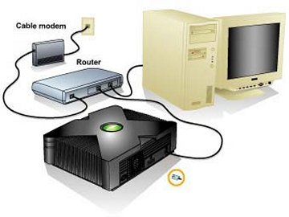
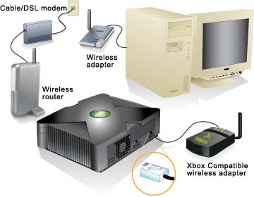
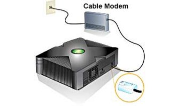
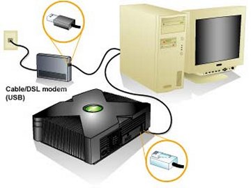

NETWORK
WIRING INFORMATION
DETAILED SETUP INSTRUCTIONS
Cable Modem + Router + Xbox + PC

Wall > Modem > Router WAN Port > Router LAN Ports < Devices
This is the easiest setup method! The router assignes Xbox an IP
address if your Dashboard is set to DHCP. Xbox live will easilly
connect this way also.
If you are using a SWITCH or HUB instead of a router, then you need to
use STATIC IP settings. IF you have your cable modem into the
switch or hub as well Be careful,
because your Cable Modem (ISP) may assign the Xbox an IP address, and
they charge you for the extra IP addresses that are NOT behind a
router. Most new cable modems support up to 32 devices.
Comcast charges 7.99+ per device the Cable Modem assignes IP addresses
to.
Wireless
Setup

Wall > Modem > Wireless Router > Wireless Adapter < Xbox
Wireless-G routers are as low as 39.99 now.
Xbox Wireless Adapter

Fully compatible with all 802.11g and 802.11b Wi-Fi networks.
The Xbox wireless adapter comes with a SETUP disc. You can't use
any Wireless adapter on Xbox, and you can't use a USB to RJ45 adapter
on cheap USB wireless adapers. This adapter is designed
specifically for Xbox.
 The other alternative
is a wireless "Bridge". This device works like the Xbox adapter,
but is an extension of your wireless router. It would be just like
plugging the xbox into the router, and is simply configured by a
PC. Xbox will not even know it is a wireless device.
The other alternative
is a wireless "Bridge". This device works like the Xbox adapter,
but is an extension of your wireless router. It would be just like
plugging the xbox into the router, and is simply configured by a
PC. Xbox will not even know it is a wireless device.
Wireless Ethernet Bridge can make any wired Ethernet-equipped device a
part of your wireless network.
Cable
Modem + Xbox

Wall > Modem < Xbox
Use the cable that came WITH the modem.
For Xbox live only, no FTP access.
Windows
ICS
Connection (Shared PC)

Wall > Modem > PC USB/NIC1 > PC NIC2 <
XBOX
Xbox Live is supported through Windows ICS for only Windows XP,
Windows
Me, Windows
2000 Professional, and Windows
98 SE. Depending on your
operating system, the ICS software might or might not have been
automatically installed when your PC was configured. The steps to
enable ICS differ based on what operating system you have.
CONNECTIONS:
USB MODEM: http://www.xbox.com/zh-SG/live/connect/usbbasedmodem.htm
INTERNAL PCI BROADBAND MODEM: http://www.xbox.com/zh-SG/live/connect/internalpcimodem.htm
ROUTER: http://www.xbox.com/zh-SG/live/connect/router.htm
DIRECT (MODEM TO XBOX): http://www.xbox.com/zh-SG/live/connect/direct.htm
Routers
The following routers have earned the Xbox Live Compatible
logo:
| Microsoft |
Supported Firmware |
| MN-100 |
1.08, 1.11.017 |
| MN-500 |
1.08, 1.11.017 |
| MN-700 |
02.00.07.0331,
02.00.08.0333,
02.01.02.0590 |
| DLink |
Supported Firmware |
| DI-524 |
1.05, 3.00 |
| DI-604 |
2.18, 3.2, 3.36 |
| DI-614+ |
2.18, 3.2, 3.35 |
| DI-624 |
2.25, 2.28, 2.42, 2.50 |
| DI-784 |
2.38 |
| DGL-4100 |
1.2, 1.3 |
| DGL-4300 |
1.2, 1.3 |
Incompatible Routers
These routers have been found to be incompatible with
Xbox Live.
The following wireless
bridges have earned the Xbox Live
Compatible logo.
| Microsoft |
Supported Firmware |
| MN-740 |
1.0.2.21 and later |
The
following gateways have earned the Xbox Live
Compatible logo.
| Model |
Firmware |
Logo-Certified
on Provider |
Efficient Networks
Speedstream 6300 |
3.0.2 (004-E771-A3Z),
3.2.0 (004-E771-A5X) |
Sympatico
(Bell Canada) |
| Netgear CG814WG |
2.94d02 |
Comcast |
INSTRUCTIONS
XBOX TO PC ONLY
1 or 2 network cards ( NIC’s ) being referring to
them as NIC’s from now on.... You’ll need 2 if you want to be connected
to the internet at the same time that your connected to your xbox.
1
crossover cable. Very important that you have a crossover cable. This
is how
you know if you have a crossover cable take the 2 male ends of the
cable put them side by side; If the colored wire patterns are exactly
the same it means you have the WRONG cable. You know if you have the
right cable when the wires looked mixed up, or in a different pattern
compared to other end, so make sure of this. It's a very crucial
part.
Xbox or boot disc with evolution x
Flashfxp.
What
you need to do next is configure your computers ip address’s.. so go
into your computer network connections and go into the properties of
the nic that is connected to the internet. Check off obtain a IP
address automatically.
Now for the nic that is
connected to the xbox; go into the properties- check off "use the
following IP".
Next,
where it says IP address, enter: 192.168.0.1. Where it says Subnet
Mask, enter: 255.255.255.0. , and where it says default gateway enter
192.168.0.1
Next while still in the
properties of the
nic, click on the configure button. Then click on the advanced tab,
then click on network media and set it to 10baseT full duplex.
Now your computer should all be
good to go.
Now
you want to startup evolution x and go into the system settings a get
your IP address. It's usually 192.168.0.3 something like that, but make
a note
of it.
Now you want to fire up flashfxp
Flash
FXP:
1. Download this program
2. Open it up and click on “Site Manager” then click “new site”
3. Name the new site whatever you want, (My Xbox, Xbox, etc.)
4. Go to IP and enter the IP you got from evolution x system setting
menu
5. The port should always be 21
6. Your username and password will both be “xbox”
7. Hit the “Options” tab and click off passive mode COMPLETELY.
8. now apply. and the connect
This is all you should have to
do get it to work!
IF it is not working, turn off or dissable any firewalls!